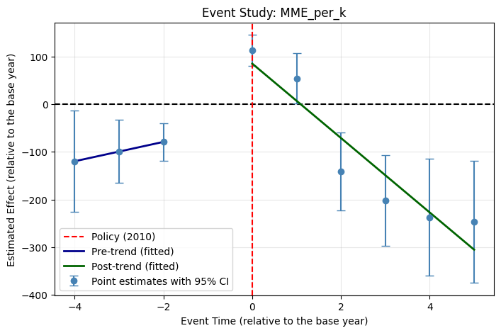
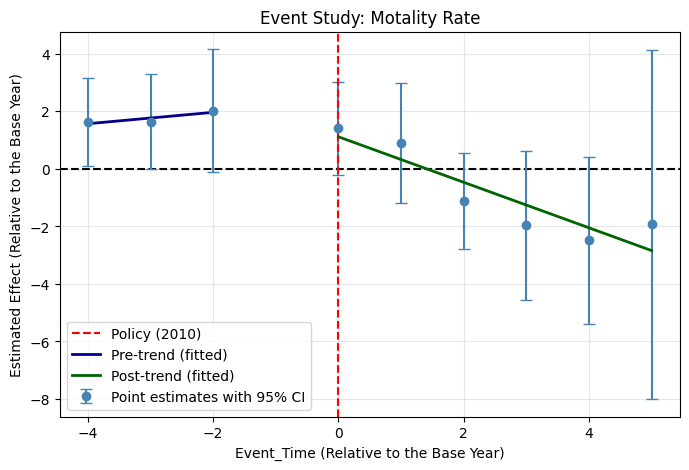
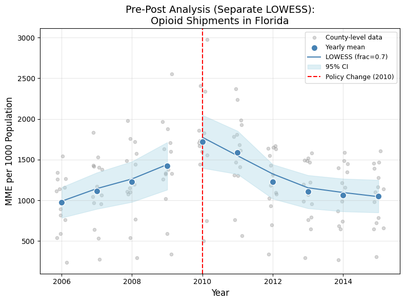
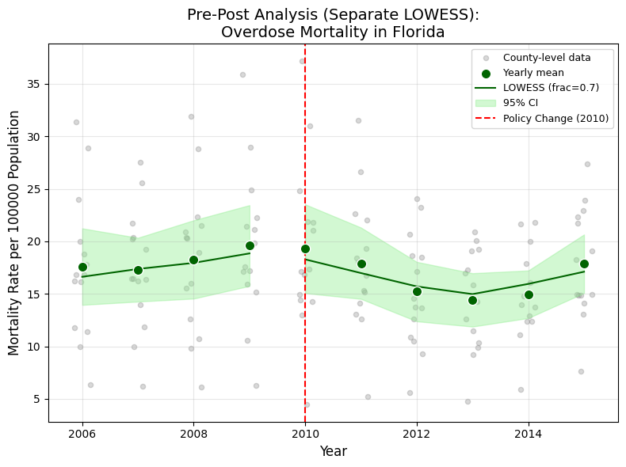

Background & My Role
This was a collaborative course project for IDS 590 (Special Topics in Interdisciplinary Data Science) at Duke University, with Aiden Shin and CJ Walker. The project evaluated whether Florida’s 2010 opioid prescription-control regulations reduced opioid shipments and overdose mortality, using a difference-in-differences (DiD) design on county-level panel data from 2006 to 2015.
My contribution covered nearly all data processing and integration, propensity score matching for control-group selection, parallel trend assessment, and Florida pre-post analysis. Specifically, I built and own five notebooks: data cleaning and merging (two notebooks), PSM for control state selection, parallel trend assessment (event study), and pre-post analysis for Florida. I also wrote the DiD model specification in the report appendix.
The main DiD estimation and final conclusions are team work, carried out by my collaborators. This page presents only my own contributions.
Course project for IDS 590, Duke University, Fall 2025.
Data Sources & Integration
The analysis required merging four data sources that arrived in entirely different formats, with inconsistent county-name spellings, different file structures, and different missing-value conventions.
Opioid shipments
DEA ARCOS data (released via Washington Post FOIA), in parquet format. Contains drug type, county, year, weight in grams, and MME conversion factor. Filtered to 15 states (Florida + 14 candidate control states) and years 2006 to 2015. Morphine milligram equivalents (MME) calculated as calc_base_wt_in_gm × mme_conversion_factor, then summed to county-year totals.
Population
US Census Bureau Intercensal Estimates, in two batches of state-by-state Excel files (2000 to 2010 as .xls, 2010 to 2020 as .xlsx). Each file required skipping variable-length headers, dropping state totals, filtering to county rows, cleaning county names, and melting from wide to long format. The two batches were then concatenated into a single 2006 to 2015 panel.
Mortality
CDC WONDER Underlying Cause of Death files, yearly tab-separated text files for 2006 to 2015. Filtered to drug-induced causes (codes D1, D2, D4, D9). Suppressed death counts (a CDC convention for small cells) converted to zero. County and state parsed from combined strings. Deaths summed across cause codes per county-year. Mortality rate calculated as (drug_deaths / population) × 100,000.
Socioeconomic covariates
ACS 2005 to 2009 Five-Year Estimates pulled via the Census API for 15 states. Variables: poverty rate, percent white non-Hispanic, percent Black non-Hispanic, percent Hispanic. These served as PSM matching covariates.
Cleaning & Variable Construction
The main integration challenge was county-name inconsistency across the four data sources. The same county might appear as “De Kalb,” “DeKalb,” or “DEKALB”; “St. Louis” vs. “Saint Louis”; “La Porte” vs. “LAPORTE.” I wrote a standardization function (developed through iterative trial and error) that uppercases, replaces abbreviations (“ST.” to “SAINT,” “STE.” to “SAINTE”), strips apostrophes and periods, and removes all spaces. This function was applied to every data source before merging, creating a uniform join key.
After merging all four sources, the key constructed variables were:
- MME per 1,000 residents: total MME / population × 1,000
- Overdose mortality per 100,000: drug deaths / population × 100,000
- Pre-treatment MME trend: OLS slope of MME per 1,000 regressed on year for 2006 to 2009, computed separately for each county (used as a PSM covariate)
- Poverty rate and racial composition: from ACS data, used as PSM covariates
The final sample comprised 62 counties across 15 states: 14 Florida counties (treatment) and 48 counties from the control pool, restricted to counties with average population above 350,000.
Propensity Score Matching & Control-Group Selection
Rather than pre-selecting control states by judgment, I used propensity score matching to let the data identify which non-Florida states most closely resembled Florida’s counties on pre-treatment characteristics. The eligible control pool excluded states that had adopted mandatory prescription drug monitoring programs or pain clinic laws before 2015.
I tested four PSM specifications, crossing two dimensions: whether or not to include the pre-treatment MME trend as a covariate, and whether to match with or without replacement. All specifications used logistic regression on standardized covariates (poverty rate, racial composition, mean MME per 1,000, mean mortality rate, and optionally the MME trend slope) to estimate the probability of being a Florida county, then matched each Florida county to its nearest control-county neighbor by propensity score distance.
Across all four specifications, Pennsylvania, Illinois, and Oklahoma consistently emerged as the states providing the best matches. This cross-specification consistency was the basis for selecting these three as the DiD control states. No single specification was treated as primary; the decision rested on the convergence of results across all four.
Parallel Trend Assessment
With the control states selected, I estimated an event-study model to assess whether Florida and the control group followed parallel trends before the 2010 policy. The model interacted event-time dummies (relative to 2009 as the reference year) with a treatment indicator, with county fixed effects and standard errors clustered at the state level. Two outcomes were tested: MME per 1,000 and overdose mortality per 100,000.


Pre-Post Analysis & DiD Model Setup
Before the full DiD (carried out by my collaborators), I produced a Florida-only pre-post analysis. For the 14 Florida counties with average population above 350,000, I computed yearly means with 95% confidence intervals and fitted separate LOWESS curves (frac = 0.7) for the pre-policy (2006 to 2009) and post-policy (2010 to 2015) periods.


I also wrote the formal DiD model specification used in the report appendix:
Yit = αi + λt + β · Treatedi · Postt + εit
where αi are county fixed effects, λt are year fixed effects, and β is the DiD estimand. Standard errors are clustered at the county level. The main DiD estimation using this specification was then carried out by my collaborators.
Skills Summary
- Multi-source data integration: merged four data sources in four different formats (parquet, state-by-state Excel files across two decades, yearly tab-separated text, Census API JSON) into a single county-year panel.
- Entity resolution: built a county-name standardization function to resolve spelling inconsistencies across federal data sources (abbreviations, spacing, punctuation).
- Propensity score matching: designed and executed a full PSM pipeline (covariate selection, logistic estimation, nearest-neighbor matching, multi-specification robustness) to select control states for a DiD design.
- Event study: implemented an event-study regression with county fixed effects and clustered standard errors to assess parallel pre-treatment trends.
- Census API and derived variables: pulled ACS estimates via the Census Bureau API and constructed rate variables for use as matching covariates.